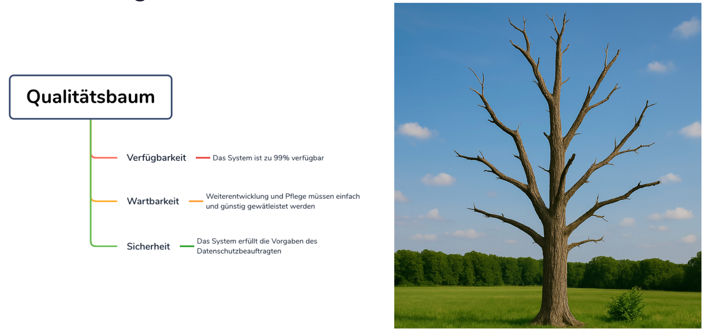

Qualität ist uns wichtig!
Eine Aussage, die man oft hört. Meist bleibt sie ein Mythos!
Wir achten zu wenig auf Qualität!
QUALITÄT IST UNS WICHTIG!! !1!elf!
Dann nenn mir unsere 3 wichtigsten Qualitätsziele!
Das dokumentieren wir am ENDE! WIE IMMER!!!
Und worauf basieren unsere Entscheidungen dann bis dahin?
Wie begegnen wir dem Mythos?
Top Qualitätsziele und Merkmale bei allen Architekturentscheidungen berücksichtgen
Die traurige Realität
